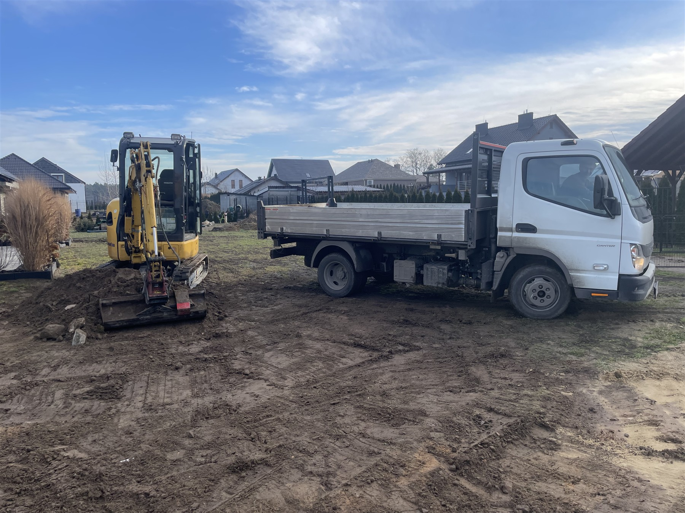

Podjazdy i parkingi
Układanie kostki brukowej na wjazdach i miejscach postojowych. Praktyczna nawierzchnia na co dzień.
WIDATECH JAMRUSZKA · BRUKARSTWO
Podjazdy, tarasy i ścieżki, które dopełniają Twój dom.
Skontaktuj się z nami01 / OFERTA
Tworzymy spójną przestrzeń wokół domu.
Zakres prac dopasowujemy do Twojej inwestycji.
Układanie kostki brukowej na wjazdach i miejscach postojowych. Praktyczna nawierzchnia na co dzień.
Miejsce na odpoczynek i wygodne przejścia wokół domu. Estetyczne połączenie budynku z ogrodem.
Uporządkowane krawędzie nawierzchni, obrzeża rabat i opaski wokół budynków. Detale, które domykają całość.
Prace ziemne, wyrównanie terenu i wykonanie podbudowy. Odpowiednia podstawa pod przyszłą nawierzchnię.
02 / REALIZACJE
Zobacz wybrane nawierzchnie
i detale wykonania.

03 / O NAS
WidaTech Jamruszka to firma brukarska ze Strzałkowa. Zajmujemy się wykonywaniem nawierzchni i przygotowaniem terenu pod inwestycje.
Stawiamy na estetyczne wykończenie i jasne ustalenia. Każdą realizację zaczynamy od rozmowy o potrzebach i możliwościach danej przestrzeni.
Poznajmy Twój projekt04 / WSPÓŁPRACA
Opowiedz, co chcesz zmienić i gdzie planujesz prace.
Sprawdzamy teren i ustalamy zakres oraz koszt realizacji.
Uzgadniamy materiały, szczegóły i termin rozpoczęcia prac.
Realizujemy uzgodnione prace i wspólnie sprawdzamy efekt.
05 / KONTAKT
Masz pomysł na podjazd lub otoczenie domu?
Zadzwoń albo napisz do nas.